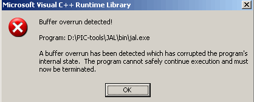

NEW announcements
SPI-FPU:
http://www.micromegacorp.com/umfpu-v2.html
28-8-2005, UltraSonic Range Detector
see: Rapid Prototyping Devices
17-8-2005, the first 7 Rapid Prototyping Devices
see: Rapid Prototyping Devices
16-8-2205, new JAL error
jal 0.4.59 (MSVC 1310.0)

4-8-2005, Datasheets
ALL DATASHEET - Free Datasheet
Electronic Component Datasheets and Data Books
16-7-2005, PIC Rapid Prototyping board
This is an attempt to make a simple but very functional Rapid Prototyping Board for PIC development.
A number of Rapid Prototyping Devices will be implemented in the new version of JALcc.
28-03-2005, JALcc V1.0 released
JALcc is a complete Integrated Development Environement (IDE) for technician, especially for PIC and JAL.
JALcc v1.0 is completly renewed, compared with previous versions, the user interface has been made much simpeler, while the functionality is increased. Plans for the future will increase the functionality further on.
PuntHoofd users should wait until v1.1, to be able to import there document list and to get all the functionalities they have now.
25-01-2005, macro Sine-table
not yet released (waits for JALcc v1.0)
12-01-2005, New version of Dallas 1-wire lib
Fixes an important bug, when more then 2 1-wire devices were connected
31-12-2004, EEprom endurance worse then we think
EEprom endurance is 10 times worse as most of us think !!
EEprom endurance, worse then we think
28-12-2004, How to (not) blink a LED in JAL
Basically a description of all the problems you could encounter as a newbie,
to get a simple program as how to blink a LED working,
but also some discussion about advanced IO-issues.
27-11-2004, an interesting site on PWM & Servo
JAL Interrupt Routines for the 16f684 (JIR16f684)
3-11-2004, a very interesting site on X10 and wireless
02-10-2004, INC 2 JAL, new version
This new version is constructed on the base of the current discussion on the JALlist.
See for details: Auto INC 2 JAL translation
25-09-2004, Bootloader V2.0 integrated with JALcc
Shane Tolmies bootloader can now be fully controlled by JALcc. So from changing your JAL-source code, it's just 1 button press away from realtime serial debugging. (see JALcc-Bootloader)